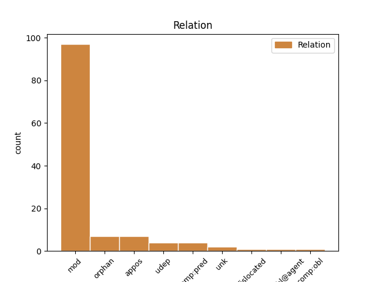
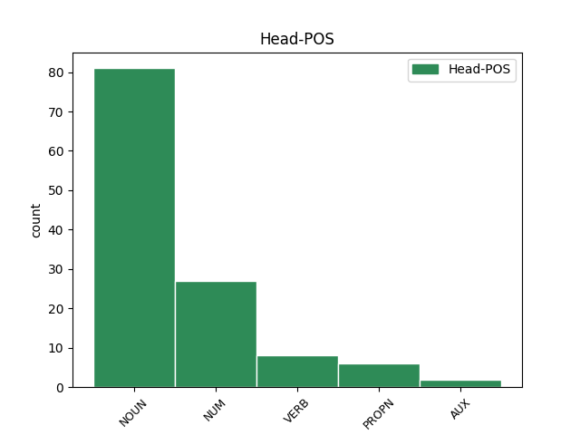
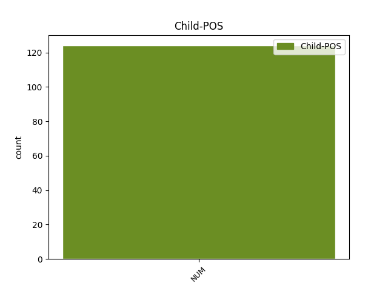

Distribution of features within this leaf



Agreement Rules sorted by frequency.
- When the dependent token is the modifer(mod) of the head token, and the head token is NOUN and the dependent token is NUM.
1 ꙇ _ _ _ _ 0 _ _ _
2 видѣ _ _ _ _ 0 _ _ _
3 дъва дъва NUM Ma Case=Acc|Gender=Masc|Number=Dual 4 mod _ ref=JOHN_20.12
4 анⷸ҇ла ангелъ NOUN Nb Case=Acc|Gender=Masc|Number=Dual 0 _ _ _
5 въ _ _ _ _ 0 _ _ _
6 бѣлахъ _ _ _ _ 0 _ _ _
7 сѣдѧшта _ _ _ _ 0 _ _ _
8 единого _ _ _ _ 0 _ _ _
9 оу _ _ _ _ 0 _ _ _
10 главꙑ _ _ _ _ 0 _ _ _
11 ꙇ _ _ _ _ 0 _ _ _
12 единого _ _ _ _ 0 _ _ _
13 оу _ _ _ _ 0 _ _ _
14 ногоу _ _ _ _ 0 _ _ _
15 ꙇдеже _ _ _ _ 0 _ _ _
16 бѣ _ _ _ _ 0 _ _ _
17 лежало _ _ _ _ 0 _ _ _
18 тѣло _ _ _ _ 0 _ _ _
19 и҃сво _ _ _ _ 0 _ _ _
1 бѫдетъ _ _ _ _ 0 _ _ _
2 бо _ _ _ _ 0 _ _ _
3 отъ _ _ _ _ 0 _ _ _
4 селѣ _ _ _ _ 0 _ _ _
5 пѧть _ _ _ _ 0 _ _ _
6 вь _ _ _ _ 0 _ _ _
7 единомъ _ _ _ _ 0 _ _ _
8 домоу _ _ _ _ 0 _ _ _
9 раздѣленъ _ _ _ _ 0 _ _ _
10 трие триѥ NUM Ma Case=Nom|Gender=Masc|Number=Plur 0 _ _ _
11 на _ _ _ _ 0 _ _ _
12 дъва _ _ _ _ 0 _ _ _
13 и _ _ _ _ 0 _ _ _
14 дъва дъва NUM Ma Case=Nom|Gender=Masc|Number=Dual 10 orphan _ ref=LUKE_12.52
15 на _ _ _ _ 0 _ _ _
16 три _ _ _ _ 0 _ _ _
17 ꙇ _ _ _ _ 0 _ _ _
18 раздѣлѧтъ _ _ _ _ 0 _ _ _
19 сѧ _ _ _ _ 0 _ _ _
20 отъцъ _ _ _ _ 0 _ _ _
21 на _ _ _ _ 0 _ _ _
22 с҃нъ _ _ _ _ 0 _ _ _
23 ꙇ҅ _ _ _ _ 0 _ _ _
24 с҃нъ _ _ _ _ 0 _ _ _
25 на _ _ _ _ 0 _ _ _
26 о҃тъца _ _ _ _ 0 _ _ _
27 мати _ _ _ _ 0 _ _ _
28 на _ _ _ _ 0 _ _ _
29 дъштерь _ _ _ _ 0 _ _ _
30 и _ _ _ _ 0 _ _ _
31 дъшти _ _ _ _ 0 _ _ _
32 на _ _ _ _ 0 _ _ _
33 матерь _ _ _ _ 0 _ _ _
34 свекрꙑ _ _ _ _ 0 _ _ _
35 на _ _ _ _ 0 _ _ _
36 невѣстѫ _ _ _ _ 0 _ _ _
37 своѭ _ _ _ _ 0 _ _ _
38 и _ _ _ _ 0 _ _ _
39 невѣста _ _ _ _ 0 _ _ _
40 на _ _ _ _ 0 _ _ _
41 свекровь _ _ _ _ 0 _ _ _
42 своѭ _ _ _ _ 0 _ _ _
1 вьзлеже _ _ _ _ 0 _ _ _
2 оубо _ _ _ _ 0 _ _ _
3 мѫжъ _ _ _ _ 0 _ _ _
4 числомъ _ _ _ _ 0 _ _ _
5 ѣко _ _ _ _ 0 _ _ _
6 пѧть пѧть NUM Ma Case=Nom|Gender=Fem|Number=Sing 0 _ _ _
7 тꙑсѫштъ тꙑсѧщи NUM Ma Case=Gen|Gender=Fem|Number=Plur 6 mod _ ref=JOHN_6.10
1 Тома ѳома PROPN Ne Case=Nom|Gender=Masc|Number=Sing 0 _ _ _
2 же _ _ _ _ 0 _ _ _
3 единъ ѥдинъ NUM Ma Case=Nom|Gender=Masc|Number=Sing 1 appos _ ref=JOHN_20.24
4 отъ _ _ _ _ 0 _ _ _
5 обою _ _ _ _ 0 _ _ _
6 на _ _ _ _ 0 _ _ _
7 десѧте _ _ _ _ 0 _ _ _
8 нарицаемꙑ _ _ _ _ 0 _ _ _
9 близнецъ _ _ _ _ 0 _ _ _
10 не _ _ _ _ 0 _ _ _
11 бѣ _ _ _ _ 0 _ _ _
12 тоу _ _ _ _ 0 _ _ _
13 съ _ _ _ _ 0 _ _ _
14 ними _ _ _ _ 0 _ _ _
15 егда _ _ _ _ 0 _ _ _
16 приде _ _ _ _ 0 _ _ _
17 и҃с _ _ _ _ 0 _ _ _
1 ꙇ _ _ _ _ 0 _ _ _
2 се _ _ _ _ 0 _ _ _
3 жена _ _ _ _ 0 _ _ _
4 бѣаше _ _ _ _ 0 _ _ _
5 д҃хъ _ _ _ _ 0 _ _ _
6 имѫшти имѣти VERB V- Case=Nom|Gender=Fem|Number=Sing|Strength=Strong|Tense=Pres|VerbForm=Part|Voice=Act 0 _ _ _
7 недѫжень _ _ _ _ 0 _ _ _
8 ѕ҃ осмь NUM Ma Case=Acc|Gender=Fem|Number=Sing 6 udep _ ref=LUKE_13.11
9 ꙇ҃ _ _ _ _ 0 _ _ _
10 на _ _ _ _ 0 _ _ _
11 десѧте _ _ _ _ 0 _ _ _
12 лѣтъ _ _ _ _ 0 _ _ _
13 и _ _ _ _ 0 _ _ _
14 бѣ _ _ _ _ 0 _ _ _
15 слѫка _ _ _ _ 0 _ _ _
16 ꙇ _ _ _ _ 0 _ _ _
17 не _ _ _ _ 0 _ _ _
18 могѫшти _ _ _ _ 0 _ _ _
19 сѧ _ _ _ _ 0 _ _ _
20 въсклонити _ _ _ _ 0 _ _ _
21 отънѫдь _ _ _ _ 0 _ _ _
1 Г҃ла _ _ _ _ 0 _ _ _
2 къ _ _ _ _ 0 _ _ _
3 нимъ _ _ _ _ 0 _ _ _
4 никодимъ _ _ _ _ 0 _ _ _
5 пришедꙑ _ _ _ _ 0 _ _ _
6 къ _ _ _ _ 0 _ _ _
7 немоу _ _ _ _ 0 _ _ _
8 ноштиѭ҄ _ _ _ _ 0 _ _ _
9 единъ ѥдинъ NUM Ma Case=Nom|Gender=Masc|Number=Sing 10 comp:pred _ ref=JOHN_7.50
10 сꙑ бꙑти AUX V- Case=Nom|Gender=Masc|Number=Sing|Strength=Strong|Tense=Pres|VerbForm=Part|Voice=Act 0 _ _ _
11 отъ _ _ _ _ 0 _ _ _
12 нихъ _ _ _ _ 0 _ _ _
1 Тогда _ _ _ _ 0 _ _ _
2 пристѫпьше пристѫпити VERB V- Case=Nom|Gender=Masc|Number=Plur|Strength=Strong|Tense=Past|VerbForm=Part|Voice=Act 0 _ _ _
3 оученици _ _ _ _ 0 _ _ _
4 и҃сви _ _ _ _ 0 _ _ _
5 единомоу ѥдинъ NUM Ma Case=Dat|Gender=Masc|Number=Sing 2 comp:pred _ ref=MATT_17.19
6 рѣшѧ _ _ _ _ 0 _ _ _
1 Ꙇ _ _ _ _ 0 _ _ _
2 придѫ _ _ _ _ 0 _ _ _
3 къ _ _ _ _ 0 _ _ _
4 немоу _ _ _ _ 0 _ _ _
5 носѧште _ _ _ _ 0 _ _ _
6 ослабленъ _ _ _ _ 0 _ _ _
7 жилами _ _ _ _ 0 _ _ _
8 носимъ носити VERB V- Case=Acc|Gender=Masc|Number=Sing|Strength=Strong|Tense=Pres|VerbForm=Part|Voice=Pass 0 _ _ _
9 четꙑрьми четꙑрe NUM Ma Case=Ins|Gender=Masc|Number=Plur 8 comp:obl@agent _ ref=MARK_2.3
1 ꙇ _ _ _ _ 0 _ _ _
2 се _ _ _ _ 0 _ _ _
3 дъва _ _ _ _ 0 _ _ _
4 отъ _ _ _ _ 0 _ _ _
5 нихъ _ _ _ _ 0 _ _ _
6 бѣсте _ _ _ _ 0 _ _ _
7 идѫшта _ _ _ _ 0 _ _ _
8 въ _ _ _ _ 0 _ _ _
9 тъжде _ _ _ _ 0 _ _ _
10 день _ _ _ _ 0 _ _ _
11 вь _ _ _ _ 0 _ _ _
12 весь _ _ _ _ 0 _ _ _
13 отъстоѩштѫ отъстоꙗти VERB V- Case=Acc|Gender=Fem|Number=Sing|Strength=Strong|Tense=Pres|VerbForm=Part|Voice=Act 0 _ _ _
14 стадии _ _ _ _ 0 _ _ _
15 шесть шесть NUM Ma Case=Acc|Gender=Fem|Number=Sing 13 comp:obl _ ref=LUKE_24.13
16 десѧтъ _ _ _ _ 0 _ _ _
17 отъ _ _ _ _ 0 _ _ _
18 ꙇ҃ма _ _ _ _ 0 _ _ _
19 еиже _ _ _ _ 0 _ _ _
20 имѧ _ _ _ _ 0 _ _ _
21 емаоусъ _ _ _ _ 0 _ _ _
22 ꙇ _ _ _ _ 0 _ _ _
23 та _ _ _ _ 0 _ _ _
24 бесѣдоваашете _ _ _ _ 0 _ _ _
25 къ _ _ _ _ 0 _ _ _
26 себѣ _ _ _ _ 0 _ _ _
27 о _ _ _ _ 0 _ _ _
28 вьсѣхъ _ _ _ _ 0 _ _ _
29 сихъ _ _ _ _ 0 _ _ _
30 приключьшиихъ _ _ _ _ 0 _ _ _
31 сѧ _ _ _ _ 0 _ _ _
Disagree Examples:
1 ꙇ _ _ _ _ 0 _ _ _
2 се _ _ _ _ 0 _ _ _
3 жена _ _ _ _ 0 _ _ _
4 кръвоточива _ _ _ _ 0 _ _ _
5 дьвѣ дъва NUM Ma Case=Acc|Gender=Fem,Neut|Number=Dual 8 mod _ ref=MATT_9.20
6 на _ _ _ _ 0 _ _ _
7 десѧте _ _ _ _ 0 _ _ _
8 лѣтѣ лѣто NOUN Nb Case=Acc|Gender=Neut|Number=Dual 0 _ _ _
9 имѫшти _ _ _ _ 0 _ _ _
10 пристѫпьши _ _ _ _ 0 _ _ _
11 съ _ _ _ _ 0 _ _ _
12 зади _ _ _ _ 0 _ _ _
13 прикоснѫ _ _ _ _ 0 _ _ _
14 сѧ _ _ _ _ 0 _ _ _
15 вьскрилии _ _ _ _ 0 _ _ _
16 ризꙑ _ _ _ _ 0 _ _ _
17 его _ _ _ _ 0 _ _ _
1 не _ _ _ _ 0 _ _ _
2 дьвѣ дъва NUM Ma Case=Nom|Gender=Fem,Neut|Number=Dual 4 mod _ ref=MATT_10.29
3 ли _ _ _ _ 0 _ _ _
4 пьтици пътица NOUN Nb Case=Nom|Gender=Fem|Number=Dual 0 _ _ _
5 на _ _ _ _ 0 _ _ _
6 ссарии _ _ _ _ 0 _ _ _
7 вѣнимѣ _ _ _ _ 0 _ _ _
8 есте _ _ _ _ 0 _ _ _
1 дроугаа _ _ _ _ 0 _ _ _
2 же _ _ _ _ 0 _ _ _
3 падѫ _ _ _ _ 0 _ _ _
4 на _ _ _ _ 0 _ _ _
5 земи _ _ _ _ 0 _ _ _
6 добрѣ _ _ _ _ 0 _ _ _
7 ꙇ _ _ _ _ 0 _ _ _
8 даѣхѫ _ _ _ _ 0 _ _ _
9 плодъ _ _ _ _ 0 _ _ _
10 ово _ _ _ _ 0 _ _ _
11 съто _ _ _ _ 0 _ _ _
12 ово _ _ _ _ 0 _ _ _
13 шесть шесть NUM Ma Case=Acc|Gender=Fem|Number=Sing 0 _ _ _
14 десѧтъ десѧть NUM Ma Case=Gen|Gender=Fem,Masc|Number=Plur 13 mod _ ref=MATT_13.8
15 ово _ _ _ _ 0 _ _ _
16 три _ _ _ _ 0 _ _ _
17 десѧти _ _ _ _ 0 _ _ _
1 не _ _ _ _ 0 _ _ _
2 имамъ _ _ _ _ 0 _ _ _
3 съде _ _ _ _ 0 _ _ _
4 тъкмо _ _ _ _ 0 _ _ _
5 пѧть _ _ _ _ 0 _ _ _
6 хлѣбъ _ _ _ _ 0 _ _ _
7 и _ _ _ _ 0 _ _ _
8 дьвѣ дъва NUM Ma Case=Acc|Gender=Fem,Neut|Number=Dual 9 mod _ ref=MATT_14.17
9 рꙑбѣ рꙑба NOUN Nb Case=Acc|Gender=Fem|Number=Dual 0 _ _ _
1 ꙇ _ _ _ _ 0 _ _ _
2 повелѣвъ _ _ _ _ 0 _ _ _
3 народомъ _ _ _ _ 0 _ _ _
4 вьзлещи _ _ _ _ 0 _ _ _
5 на _ _ _ _ 0 _ _ _
6 трѣвѣ _ _ _ _ 0 _ _ _
7 ꙇ҅ _ _ _ _ 0 _ _ _
8 приемъ _ _ _ _ 0 _ _ _
9 пѧть _ _ _ _ 0 _ _ _
10 хлѣбъ _ _ _ _ 0 _ _ _
11 и _ _ _ _ 0 _ _ _
12 дьвѣ дъва NUM Ma Case=Acc|Gender=Fem,Neut|Number=Dual 13 mod _ ref=MATT_14.19
13 рꙑбѣ рꙑба NOUN Nb Case=Acc|Gender=Fem|Number=Dual 0 _ _ _
14 вьзьрѣвъ _ _ _ _ 0 _ _ _
15 на _ _ _ _ 0 _ _ _
16 н҃бо _ _ _ _ 0 _ _ _
17 б҃лгсви _ _ _ _ 0 _ _ _
18 ꙇ _ _ _ _ 0 _ _ _
19 прѣломъ _ _ _ _ 0 _ _ _
20 хлѣбꙑ _ _ _ _ 0 _ _ _
21 дастъ _ _ _ _ 0 _ _ _
22 оученикомъ _ _ _ _ 0 _ _ _
23 оу҅ченици _ _ _ _ 0 _ _ _
24 же _ _ _ _ 0 _ _ _
25 народомъ _ _ _ _ 0 _ _ _